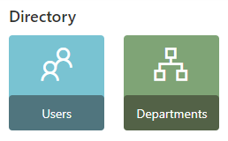
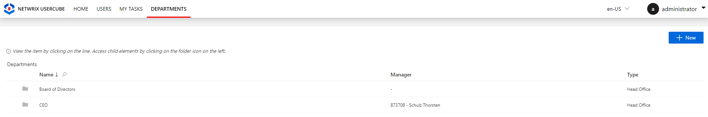

Update Identities in Bulk
How to perform a mass change in identity data, by uploading an incremental version of the identity repository.
This part is not about changing the data model, but data itself.
Here we describe the incremental update of identities, but the update of any other File/CSV works the same.
Overview
When the number of changes gets high, identity data update through the UI becomes tedious. Therefore, Identity Manager offers the possibility to fill a predefined file with data to be modified, in order to perform all changes simultaneously.
Data update can be performed in complete mode or incremental mode.
Participants and Artifacts
Identity data can be updated most often in cooperation with the HR department.
| Input | Output |
|---|---|
| Identity repository (required) New identity data (required) |
Updated identity repository |
See the Create the Workforce Repository topic for additional information.
Update Data in Complete Mode
Mass update identity data (in complete mode) by proceeding as follows:
-
Access the directory connector from Connectors on the home page, in the Configuration section.

-
On the connector's page, choose the connection corresponding to identities.
-
In the connection's settings, download the Excel template full of the data from your database.
-
Update the data that needs change.
-
Ensure that the field
Path (Complete mode)is filled with the path of the source file. -
Click on Upload and choose the file you modified with new data.
-
Click on Check Connection to verify the path.
-
Click on Save & Close.
-
Back on the connector's page, launch synchronization. See the Synchronize Data topic for additional information.
Be cautious about thresholds.
Update Data in Incremental Mode
Mass update identity data (in incremental mode) by proceeding as follows:
-
Access the directory connector from Connectors on the home page, in the Configuration section.
-
On the connector's page, choose the connection corresponding to identities.
-
In the connection's settings, download the empty Excel template.
-
Fill only the data to be modified, specify the unique identifier for each entry (for correlation purposes), and fill the column
Command, which can take a few available inputs:Addto incorporate new attributes;Modifyto change existing attributes;Attributes can be emptied using the value
NULL_NULL.Deleteto remove attributes from the datamodel;Instead of using
Delete, you can scan the data model to exclude unused attributes. See the Create the Workforce Repository topic for additional information.Mergeto input an identity's data and modify the corresponding attributes if said identity already exists, create a new identity otherwise.
For example, if a few users switch working sites, then the modification is performed by filling the file only with said users' identifiers and new sites. Fill the column
CommandwithModify. The rest will not be changed. -
Ensure that the field
Path (Incremental mode)is filled with the path of the source file. -
Click on Upload and choose the file you modified with new data.
-
Click on Check Connection to verify the path.
-
Click on Save & Close.
-
Back on the connector's page, launch synchronization. See the Synchronize Data topic for additional information.
Be cautious about thresholds.
Verify Data Update
In order to verify the process:
-
Check manually a sample in the
Userdirectory accessible from the home page. You should verify at least your own sheet and the sheets for your hierarchy.
-
Check that every organization still has a manager. Organizations are accessible in the
Departmentdirectory accessible from the home page.

If the system contains many organizations, then it is also possible to list them with their managers through the Query module.
-
Create reports with indicators on the workers number per type or per organization for example (through Identity Manager' predefined reports, the Query module or Power BI), in order to ensure that Identity Manager's content sticks to reality. See the Generate Reports topic for additional information.